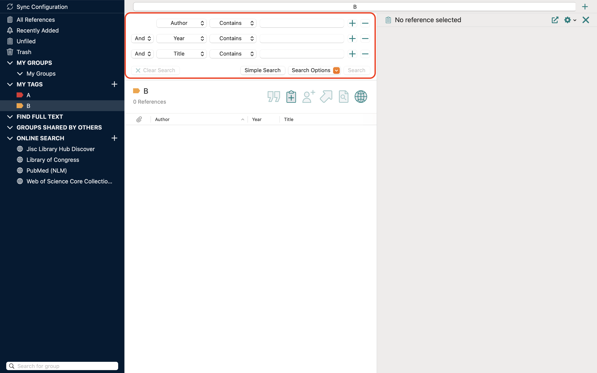

进阶搜索
按条件搜索文献
- 在左侧栏中选择想要搜索的范围，可以在All References、Recently Added、Unfiled、Group和Tag中选择；
- 点击搜索栏右侧Advanced Search进入进阶搜索，界面如图；
- 搜索栏最右侧+-可以增删搜索条件；
- 最左侧And可以选择搜索逻辑，下拉后会出现AndOrNot三个选项，分别代表与、或、非；
- 左侧第二栏可以选择关键词搜索范围，若为Author则在作者中搜索，下拉可见全部可用搜索范围；
- 左侧第三栏可以选择关键词搜索方式，若为contain则表示完全包含关键词，下拉可见全部可用方式；
- 最后一栏为搜索框，在其中输入关键词；
- 单击右下角Search完成搜索。